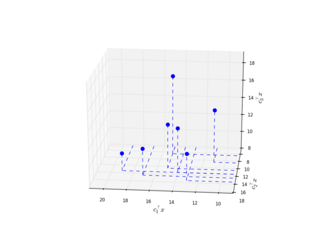
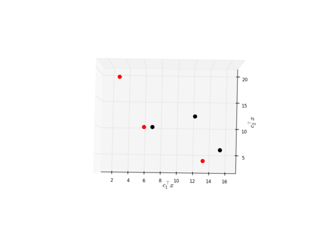

Basic usage¶
PolyNondom expects either a feasible domain and corresponding objectives or pre-computed points in objective space.
Usage with a feasible domain and objectives¶
Let’s assume we want to compute and visualise the non-dominated points of an assignment problem (with 4 agents and 4 jobs). Furthermore, let /tmp/objs.txt be the file with the objective functions having the following content:
Using the python shell we could do the following:
import polynondom as pnd
objs = pnd.Objectives.read("/tmp/objs.txt", delimiter=',') # create Objectives instance
ad = pnd.AssignmentDomain(4) # create AssignmentDomain instance
poly = pnd.PolyNondom.compute_points(ad, objs) # create PolyNondom instance
print("computed", poly) # print points sets to shell
poly.visualise('n', my_color="blue") # visualise non-dominated points
poly.save_figure("/tmp/my_figure.png", dpi=150, azimuth=96, elevation=21) # save visualisation to file
The result is:
Usage with pre-computed points¶
Let’s assume we have pre-computed (feasible) points of a bi-criteria knapsack problem and want to visualise the points. Let /tmp/points.txt be the file with the pre-computed points having the following content:
Using the python shell we could do the following:
import polynondom as pnd
poly = pns.PolyNondom.read_points("/tmp/points.txt", delimiter=' ') # read points from file
poly.visualise('nd') # visualise non-dominated points (in red) and dominated points (in black)
poly.save_figure('/tmp/points.png', azimuth=-89, elevation=88, dpi=150) # save visualisation to file
The result is:
